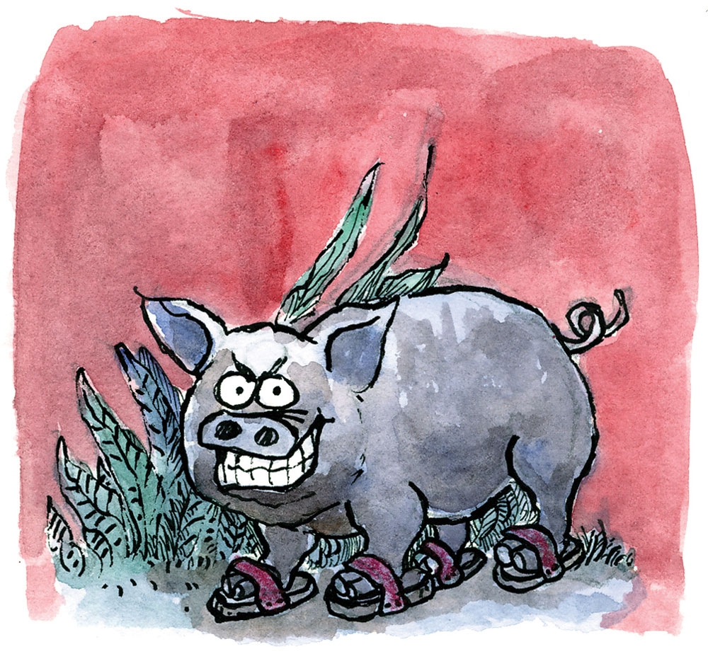
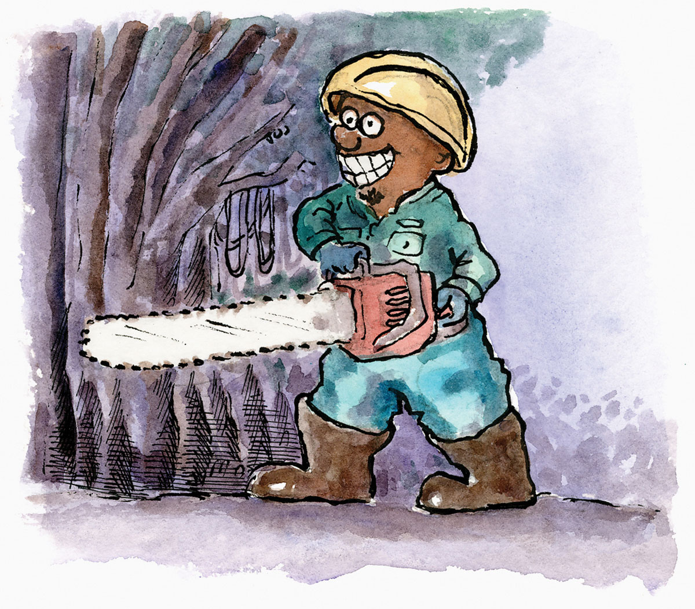

Ang Gikalisangang Dakit sa Catmondaan
Daghang kahoy nga dakit ang nanagtubo sa Barangay Catmondaan, ang barangay nga sakop sa lungsod sa Catmon, sa ikalimang distrito sa probinsiya, 53 ka kilometros gikan sa siyudad sa Sugbo. Usa niini mao ang gikaintapang dakit, dili lamang sa mga lumolupyo ning dapita kon dili, hangtod sa taga-lagyong dapit nga mahiagi ning nahimutangan sa dakit, labi na sa takna’s kagabhion.
Layo pa gani, manlimbawot na ang mga balhibo sa tangkugo tungod sa kahadlok ug tuod man, dunay panahon nga mokalit lag babag ang lungon nga dunay nagsigang mga kandila; dakong baboy nga nagbakya; dagkong iring ug iro nga siga’g mga mata; uha sa bag-ong natawong bata; dagkong luwa nga magtapasak sa imong ulohan; kahayag ug sonata ilawom sa punoan sa dakit ug uban pang makalilisang nga mga talan-awon nga makapanumpa ka nga dili na gyud moagi niadtong lugara pag-usab.
Apan ang nakapaislag gyud sa mga tawo niadtong dapita mao kining daw dili katuhoan apan tinuod nga hitabo.
Panahon kadto diin dunay tuyo nga palapdan ang gamay nga dalan-dalan sa may dakit sa Catmondaan, padulong sa Cabungaan ug uban pang kanait nga kabaranggayan sa kabukiran, kay kining dalan-dalana usa ra gyud ka tawo ang makaagi ug titip pa kaayo. Sa wala niini pangpang, ug sa tuo may kimba nga lawom kaayo. Tungod sa kahagip-ot sa dalan, daghan nang mangangani ang nangadisgrasya ning dapita.
Maayo na kadto ang dagan sa pagtrabaho sa karsada pagsugod niini gikan sa highway. Bisan mga dagkong bantilis nga tampuwong ug mga pangpang dali ra kaayong nangapulpog ug nangapatag human maniobraha sa mga modernong makinarya alang sa maong gimbuhaton.
Apan ang kasayon sa dagan sa pagtrabaho didto naha-untol sa unahan diin nagtubo ang dakit daplin sa dalan-dalan nga maoy palapdan aron hayahay nga makaagi ang dagkong sakyanan.
Bisan giunsa’g kabkab sa backhoe; dumbol sa grader; pukpok sa jackhammer; pabuthan og mga dinamita, wala gyud mangaunsa ang dagway sa mga tampuwong ug pangpang, labi na ang punoan sa dakit. Dili sab mahimong itipas na lang ang karsada kay pangpang ug mga tampuwong man usab ang palibot. Kadtong dapita ra ang medyo sayon-sayon nga kalutsan kay nipis-nipis ra man ang pangpang nga nag-ali sa pagabuhatong karsada.
Kahibudngan lang nga di man unta dagko kaayo ang mga tampuwong, pangpang ug punoan sa dakit, nganong maglisod man ang mga modernong makinarya pagguba sa nanag-ali haron mapatag? Paminaw sa mga trabahante, mora’g dunay gahom nga mopugong gyud sa ilang gibuhat. Usahay, di lang damhon, dili moandar ang ilang makinarya; ang mga dinamita kon mobuto gamay ra’g agi. Kalagmitan, mapugos sila’g trabaho og mano-mano apan kadaghanan kanila di na makabalik pagkaugma kay nanagluya.
Tungod sa kakulian, gipahunongan ang trabaho. Ang mga tampuwong, pangpang ug dakit mora’g mga higanting nanagtingsi nga padayong nanagtungkawo sa maong dapit nga daw nanagsadya sa ilang kadaugan batok sa katawhan.
Tungod kay kinahanglanon gyud nga mapalapdan ang dalan-dalan, gibalikan na usab kini’g trabaho apan gamay ra’g nahimo.
Usa ka hapon, dunay kasulti nga tigulang ang inhenyerong nagdala sa trabaho. Gipinahan sa tigulang ang enhinyero sa kakuyaw sa ilang gibuhat niadtong dapita kay ang dakit dunay nagpuyong “di ingon nato” nga kusgan, di madalidaling lupigon ang gahom. Ang mga tampuwong maoy balay nila; ang pangpang mao ang ilang plasa ug ang dakit mao ang ilang palasyo. Matod niya, daghan nang nangaalaot niadtong dapita tungod sa pagpasipala labi na sa punoan sa dakit. Kinahanglang mangita sila og meriko o tambalan nga dunay lig-on nga kalaki aron mogawad niadtong dapita sa pagpapahawa sa mga “engkanto.”
Wala motuo ang enhinyero sa tigulang. Sunod tingtrabaho, nagdala kini og tulo ka tawo haron pagputol sa dakit. Miabot na lang ang kahapunon, igo rang nakaputol sa ginagmay nga sanga ang mga sinuholan ug ipadayon lang unta pagkaugma, apan wala makabalik ang tulo kay nangasakit. Wala dangti og dugay nakabsan sila sa kinabuhi. Nasakit usab ang enhinyero ug wala na igdungog kon naunsa na kini. Misamot kaislag ang mga tawo sa pagpaduol sa maong dapit.
Naputol na usab ang pagtrabaho sa karsada, dihang gibalikan, kay nasayod man sa panghitabo, miinsister ang mga trabahante nga ipagawad ang dapit. Usa ka bantugang meriko ang migawad niini, bugti sa dakong kantidad.
Nianang pagkagabii morag nagkaguliyang ang maong dapit sa dakit. Maoy nadunggan ang mga sakyanang nagsauysaoy pagpadagan palayo sa maong lugar; mga dagkong balay nga nangalumpag; mga kasangkapan nga nangapusgay; mga makapakitbi sa atay nga tiyabaw ug danguyngoy sa mga hamtong ug mga kabataan nga mora’g gipangkastigo. Taliwala sa inusigay sa mga iro, kaadlawon nang nahunong ang makalilisang panghitabo.
Human niadto, nagmalinawon na ang lugar nga may dakit. Mora’g gibiyaan na sa “di ingon nato.” Nahibaw-an sa mga tawo nga ang merikong naggawad sa maong dapit nasakit. Wala makaantos, nakabsan sa kinabuhi. Mora’g gipanimaslan sa iyang gibuhat. Ang enhinyero wala mobalik sa maong lugar.
Ang punoan sa dakit inanay nga nagkalawos hangtod namatay kini. Inanay nga nagkasayon ang pagtrabaho sa karsada ug wala madugay, nakalahos gyud sa pikas sa pangpang. Sayon ra kaayong gipulpog ang mga tampuwong ug pangpang sa unahan. Human niadto, bisan mag-aginod, makalahos na ang mga dagkong sakyanan ug makapadayon na sa unahang kabaranggayan. Dili na usab manlimbawot ang mga balhibo sa mangagiay ug wala na kadtong makalilisang talan-awon niadtong dapita sa may dakit.